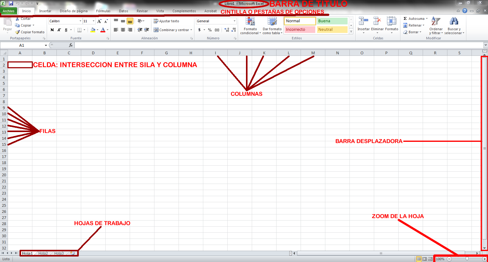
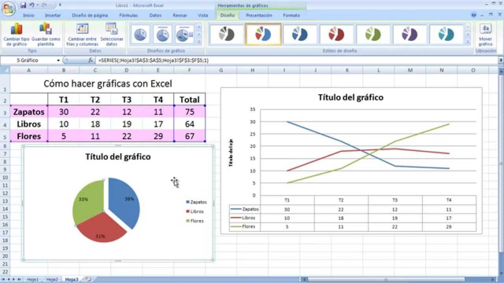

- ¿que es?
- ¿que es?
- ¿que es?
¿que es?
Excel es un programa informático de hojas de cálculo electrónicas creado por la empresa Microsoft. ... Microsoft Word o Word: procesador de texto, Microsoft Excel o Excel: hoja de cálculos y creador de gráficos, y. Microsoft Powerpoint o Powerpoint: creación y diseño de diapositivas para presentaciones.
 ¿para que sirve?
Microsoft Office Excel es una hoja de cálculo que sirve para manejar datos numéricos o alfanuméricos agrupados en filas y columnas también llamadas tablas de datos. Excel es una herramienta de gran utilidad a la hora de crear presupuestos, diseñar facturas, generar gráficos estadísticos, crear bases de datos y multiples operaciones más.
 ¿como usarlo?
Nada mejor que tener una vista previa de todo al trabajar con más de una hoja de cálculo. Afortunadamente, Excel proporciona esto en una de sus miles de funciones.